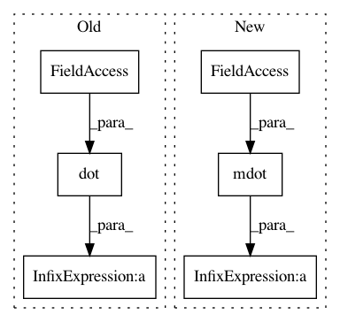

053ebbe2d4666e1575fe7153c4fe75a55db47a0c,GPy/models/uncollapsed_sparse_GP.py,uncollapsed_sparse_GP,_computations,#uncollapsed_sparse_GP#,46
Before Change
self.dL_dpsi2 = - 0.5 * self.beta * (-self.D*self.Kmmi + mdot(self.Kmmi,self.q_u_expectation[1],self.Kmmi))
// Compute dL_dKmm
tmp = np.dot(self.A,self.Kmmi)
tmp = 0.5*np.dot(np.eye(self.M) + tmp + tmp.T, self.q_u_expectation[1]) -0.5*self.Kmm - np.dot(self.psi1,self.VmT)
self.dL_dKmm = mdot(self.Kmmi,tmp,self.Kmmi)
def log_likelihood(self):
After Change
self.dL_dpsi2 = 0.5 * self.beta * self.D * (self.Kmmi - mdot(self.Kmmi,self.q_u_expectation[1],self.Kmmi))
// Compute dL_dKmm
tmp = -0.5*self.beta*self.D*self.psi2 -0.5*self.D*self.Kmm +0.5*self.D*(self.q_u_expectation[1]) + 0.5*self.beta*mdot(self.psi2,self.Kmmi,self.q_u_expectation[1]) + 0.5*self.beta*mdot(self.q_u_expectation[1],self.Kmmi, self.psi2)
//tmp = - np.dot(self.q_u_expectation[0],self.psi1V.T)
self.dL_dKmm = mdot(self.Kmmi,tmp,self.Kmmi)
def log_likelihood(self):
In pattern: SUPERPATTERN
Frequency: 3
Non-data size: 6
Instances
Project Name: SheffieldML/GPy
Commit Name: 053ebbe2d4666e1575fe7153c4fe75a55db47a0c
Time: 2012-12-09
Author: james.hensman@gmail.com
File Name: GPy/models/uncollapsed_sparse_GP.py
Class Name: uncollapsed_sparse_GP
Method Name: _computations
Project Name: SheffieldML/GPy
Commit Name: a24853da6b5c1201184fb60265c0b08b7d77e3cd
Time: 2015-04-28
Author: ibinbei@gmail.com
File Name: GPy/core/sparse_gp.py
Class Name: SparseGP
Method Name: _raw_predict
Project Name: SheffieldML/GPy
Commit Name: 9f05744374f33439d6433df98c1836278689dc20
Time: 2013-01-16
Author: james.hensman@gmail.com
File Name: GPy/models/sparse_GP_regression.py
Class Name: sgp_debugE
Method Name: _computations